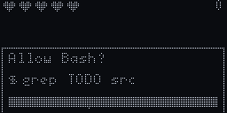
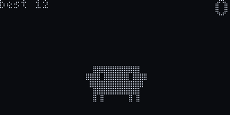
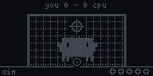

> tiny clawd
a tiny Clawd
for your desk.
it watches Claude Code work and reacts live. thinks when claude thinks, calls you when claude needs you, scores a goal when the job is done.
3D printedESP32-C31.3" OLED face~$5 of parts
fan-made, not affiliated with Anthropic. not for sale, you build it.
01 · thinking
you hit enter.
it starts thinking, with the same words the CLI uses. pondering, noodling, percolating, clauding. a little spinner, eyes reading along.
before that it watches you type. it only counts how fast keys go down, never which keys. you can switch that off.
prompt sent thinking words
02 · tools
it watches every tool.
Read reads, Grep sweeps for matches, Edit types code, web searches spin a globe. Bash gets its own looks, picked by what the command does.
- grep, find searching
- make, cargo build a building crane
- npm test, pytest bubbling test tubes
- git commit a git graph
- pip install packages
03 · subagents
a squad for subagents.
when claude sends out subagents, mini Clawds march in and pass a ball around. one for each subagent. they march back out when the work is done.
subagent started mini Clawd squad
04 · needs you
it calls you back.
a permission prompt or a question? the whole screen flashes with the project name until you answer. no more coming back to a session that waited for you all along.
several sessions share one Clawd. whoever needs you wins, then whoever is working. little dots in the corner show how many are busy.
05 · done
it celebrates.
the bigger the task, the bigger the party. a quick fix gets a small win. a long session gets a goal, a trophy or a bicycle kick.
and when tests fail it gets a yellow card. fail again, red card.
06 · usage
it keeps an eye on your limits.
your 5 hour and weekly limits, read from the Claude Code status line. running low and it gets tired. then stoppage time. hit the limit and it tells you when you're back.
double tap usage screen
07 · music
music on.
play something on the laptop. the song name scrolls by and it vibes along. the equalizer bars move to your real laptop audio, not a fake loop.
spotify, youtube... now playing
08 · idle
a life of its own.
nothing going on? it has a coffee, juggles, plays football, stares at the stars, naps and dreams. at night it falls asleep faster.
105 animations, picked at random with cooldowns, so it rarely does the same thing twice.
09 · touch
pet it.
there's one touch pad, on top of its head. that's the whole interface.
- tap petted, giggles
- double tap your usage
- hold love
- hold till the ring fills the menu
10 · games
7 games, one button.
tap to jump, kick or allow. they're easy on purpose, it's a desk toy. high scores survive unplugging.



permission panic: allow npm test, never rm -rf /.
11 · inside
about $5 of parts.
| ESP32-C3 Super Mini | ~$2 |
| 1.3" SH1106 OLED, 128x64, I2C | ~$2 |
| TTP223 touch pad | ~$0.2 |
| ~40 g of PLA, red + black | ~$0.5 |
| USB-C data cable | you have one |
| total | ~$5 |
print files for the body, back plate and stand are in hardware/print. the inner frame is the Mochi housing by Dave0616. only the outside is new, so the original electronics frame fits as is.
12 · build one
build one.
-
flash the board
get the
.binfrom the releases page. open espressif's web flasher in chrome, connect, pick the file at address0x0, press program. -
set up the laptop
the bridge, the Claude Code hooks and the usage line, in one go:
curl -fsSL https://tinyclawd.deepakpopli.in/install.sh | bashor set it up by hand. it backs up every file it touches. restart Claude Code and say hi.